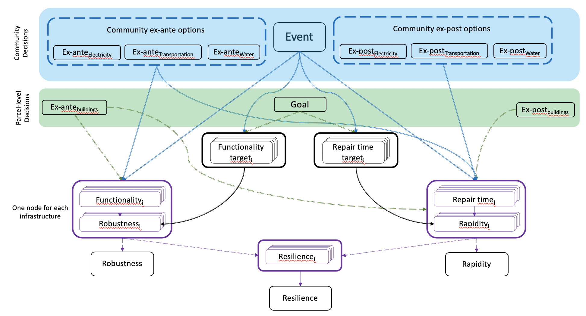
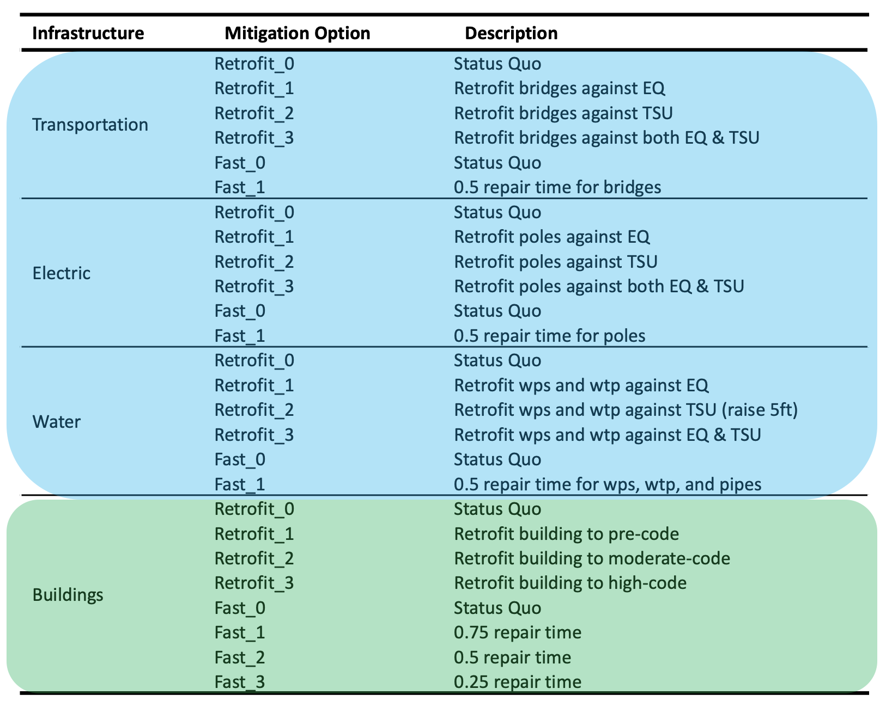

Spatial Bayesian Network¶
This notebook demonstrates the use of a spatial Bayesian network (SBN) to evaluate parcel-level resilience. The SBN is applied to Seaside, Oregon and evaluates resilience against a cascading seismic-tsunami hazard. The process to develop the spatial Bayesian network is comprised of four steps:
Damage infrastructure using pyIncore - Damage codes were developed to damage four infrastructure systems in Seaside (buildings, electric, transportation, and water). Where applicable, these damage codes used pyIncore.
Develop operability curves and populate conditional probability tables (CPTs) - The results from the damage analysis were used to generate operability curves. Statistics on the operability curves were extracted to populate the CPTs
Generate the SBN - A Bayesian network was constructed at each parcel using the resulting CPTs.
Generate parcel-level maps of resilience - The SBN can then be used as a decision support tool to evaluate parcel-level resilience.
This entire process is outlined in the figure below. This notebook, however, demonstrates the final two steps highlighted in red. That is, a spatial Bayesian network is constructed and it is used to generate maps of resilience.

The codes used for the first two steps are located in the “dev_code/” directory and consist of the following python files:
damage_building.py - damages building infrastructure and repair time analysis.
damage_electric.py - damages electric infrastructure, connectivity analysis, repair time analysis.
damage_transportation.py - damages transportation infrastructure, connectivity analysis, repair time analysis.
damage_water.py - damages water infrastructure, connectivity analysis, repair time analysis.
CPTsH5.py - populates CPTs using results from the above
This notebook is associated with the following journal paper:
Sanderson, D., Cox, D., and Naraharisetty, G. (2021). A spatially explicit decision support framework for parcel-and community-level resilience assessment using Bayesian networks. Sustainable and Resilient Infrastructure. https://doi.org/10.1080/23789689.2021.1966164
*Notebook created by Dylan R. Sanderson (OSU - sanderdy@oregonstate.edu)
Background¶
Single Bayesian Network Structure¶
Each parel is assigned a Bayesian network with unique CPTs. The structure of a single parcel’s Bayesian network is shown below. The top two layers correspond to community (blue) and parcel (green) level decisions. Functionality and repair time nodes are generated for each infrastructure system, and correspond to the operability curves. The functionality and repair time targets are used to specify a desired performance level. And the final layer is the parcel’s Robustness, Rapidity, and Resilience.
Code Prerequisites¶
The following python modules are necessary to run this notebook. Modules were installed through conda-forge on the author’s computer under the following versions.
Module |
Version |
Notes |
|---|---|---|
pyIncore |
0.6.3 |
|
pandas |
1.0.3 |
used for data organization |
geopandas |
0.6.1 |
used for working with geospatial data |
ipyleaflet |
0.13.0 |
used for geospatial visualization |
ipywidgets |
7.5.1 |
used for interacting with geospatial results |
branca |
0.3.1 |
used in geospatial visualization |
h5py |
2.10.0 |
used to interact with hdf5 file |
pomegranate |
0.11.1 |
Bayesian network module |
numpy |
1.18.1 |
working with matrices and arrays |
map_creation_backend.py* |
- |
backend code used for geospatial visualization |
- |
backend used to construct SBN |
*backend code written by the author
Run Instructions¶
To run this notebook:
Download the CPT h5 file at:.
Ensure that the CPT h5 file is in the same directory as this notebook.
Modify/setup the input data. Two input files are required and examples are provided in this repository:
i. Community-level decisions (cmty_input.csv)
ii. Parcel-level decisions (prcl_input.csv)Run each cell in this notebook.
SBN Input Options¶
The community- and parcel-level decisions are specified below. Community-level decisions are boxed in blue and correspond to the blue nodes in the Bayesian network. Parcel-level decisions are boxed in green and correspond to the green nodes in the Bayesian network. These are defined in the two input files.
Running Code¶
Importing required modules for this notebook
import os
import pandas as pd
import h5py
import matplotlib.pyplot as plt
import contextily as ctx
from mpl_toolkits.axes_grid1 import make_axes_locatable
from pyincore import IncoreClient, Dataset, DataService
from dev_code.BN import Building_BN, Seaside_buildings_BN
from dev_code.map_creation_backend import map_creation_backend
Specifying required paths and data locations
prcl_input = 'prcl_input.csv' # input parcel filename
cmty_input = 'cmty_input.csv' # input community filename
outfile_name = 'SBNo.csv' # output filename
n_parcels = 4769 # number of parcels to evaluate (0-4769)
n_process = 4 # number of processes to divide code into (runs in parallel)
cpt_path = os.path.join(os.getcwd(), 'CPTs.h5')
Reading in data and printing some information
guids = list(h5py.File(cpt_path, 'r').keys())
guids = guids[0:n_parcels]
prcl_data = pd.read_csv(prcl_input)
prcl_data = prcl_data[prcl_data['guid'].isin(guids)]
cmty_data = pd.read_csv(cmty_input, index_col=0)
Running the SBN¶
SBBN = Seaside_buildings_BN(cpt_path)
# --- evaluating BNs
out_data = SBBN.evaluate_BNs(input_data_bldg = prcl_data,
input_data_cmty = cmty_data,
n_process = n_process,
outfilename = outfile_name,
write_out=True
)
Plotting Results¶
This portion of the notebook plots the results spatially in an interactive map. Each parcel is color coded according to it’s robustness, rapidity, or resilience.
# reading in results
result_file = os.path.join(os.getcwd(), 'SBNo.csv')
result_df = pd.read_csv(result_file)
result_df.set_index('guid', inplace=True)
# reading in polygon layer for plotting
client = IncoreClient()
data_service = DataService(client)
bldg_inventory_id = '5d927ab2b9219c06ae8d313c' # polygons
bldg_ds = Dataset.from_data_service(bldg_inventory_id, data_service)
bldg_df = bldg_ds.get_dataframe_from_shapefile()
bldg_df.set_index('guid', inplace=True)
bldg_df = pd.merge(bldg_df, result_df, left_index=True, right_index=True)
Connection successful to IN-CORE services. pyIncore version detected: 1.0.0
Dataset already exists locally. Reading from local cached zip.
Unzipped folder found in the local cache. Reading from it...
fig, ax = plt.subplots(1,1, figsize=(10,15))
bldg_df = bldg_df.to_crs(epsg=3857)
divider = make_axes_locatable(ax)
cax = divider.append_axes("right", size="5%", pad=0.1)
ax = bldg_df.plot(figsize=(10, 10),
column='resilience',
legend=True,
ax=ax,
cax=cax)
ctx.add_basemap(ax, source=ctx.providers.OpenStreetMap.Mapnik)